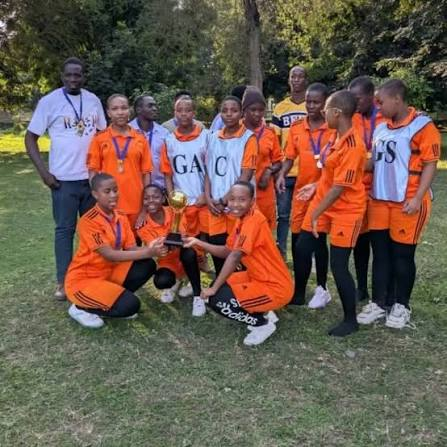
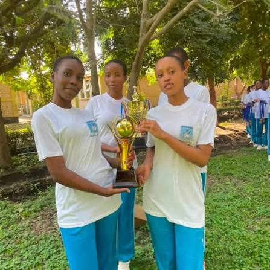
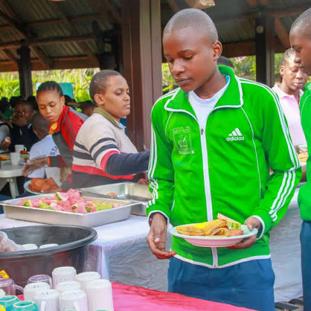
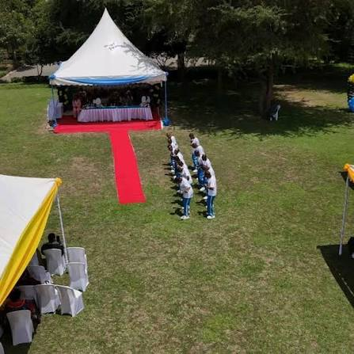
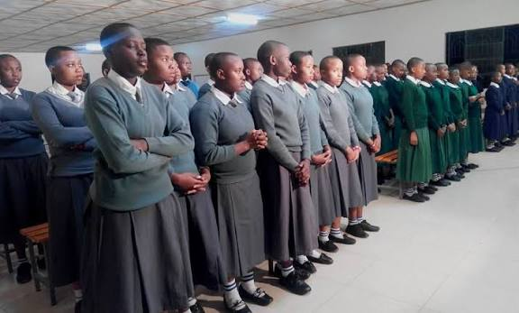
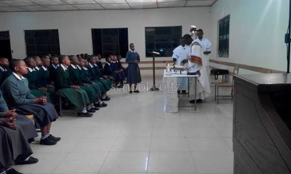

Campus Life
Learning and growing beyond the classroom

Star Farm and the student bakery
Practical work is part of school life.
Star Farm
The school farm keeps dairy cattle and supports the kitchen. Students take part in the daily work and learn how a farm feeds a community.
Student bakery
In the bakery, students learn to mix, bake and sell, and pick up basic enterprise skills such as costing, quality and customer service.
Study tours
Classes travel to see their lessons in real places. At Tanga Port, students study trade and transport. At the Kaole Ruins near Bagamoyo, they walk through the history of the Swahili coast.

Sport and teamwork


Meals and community
Meals are shared, and special days bring the whole school together under open shelters on the lawn.
Ceremonies
Parents, guests and staff gather on the school lawn for graduation and other celebrations, with students marching in by class.

Gallery
Drag, swipe or use the buttons.




